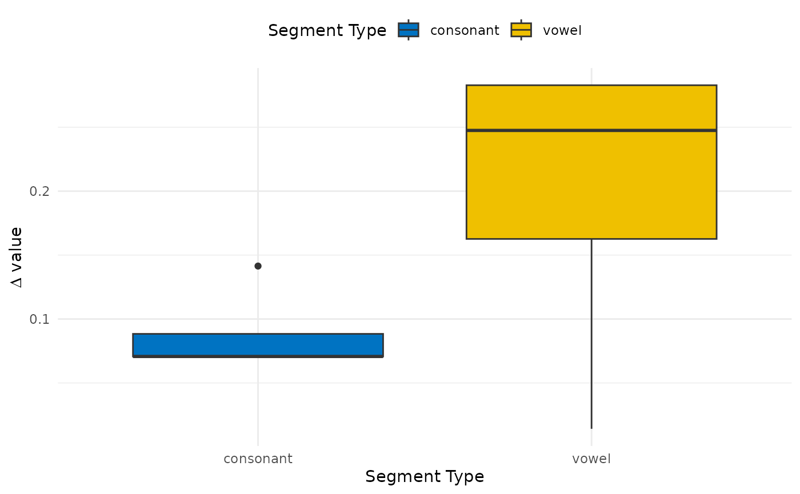
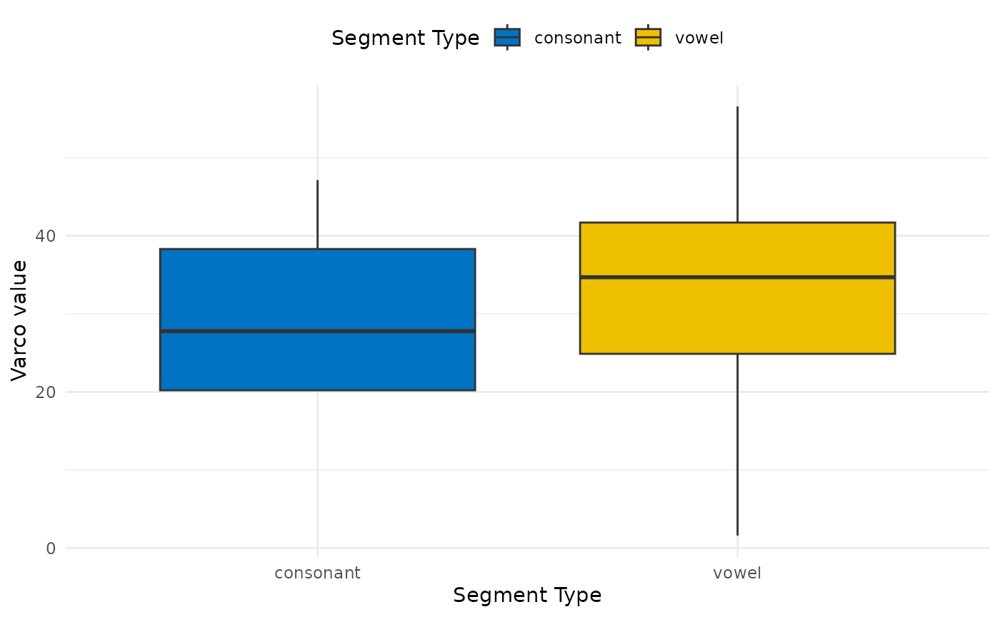
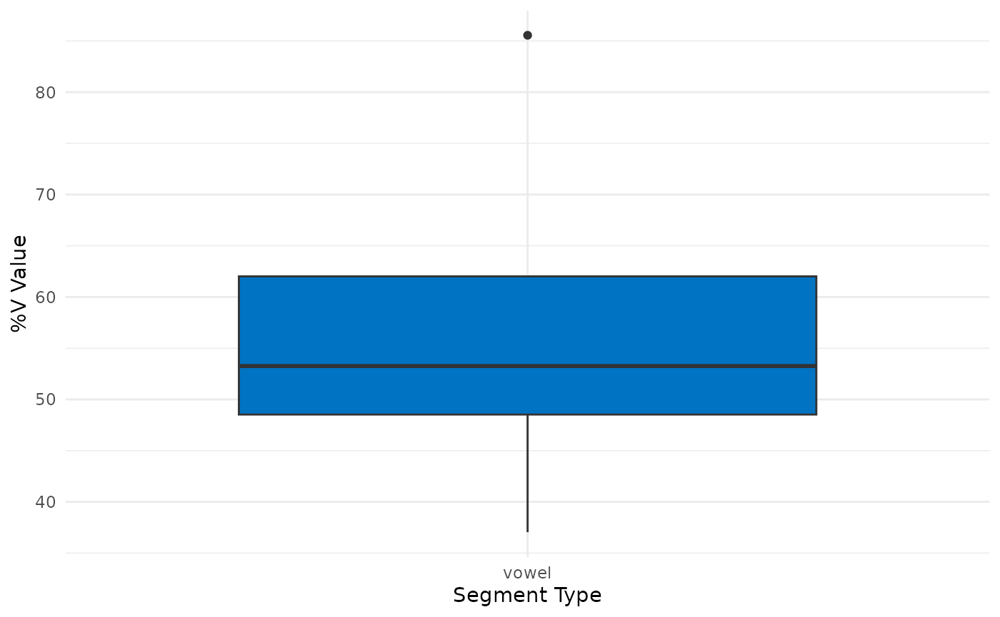
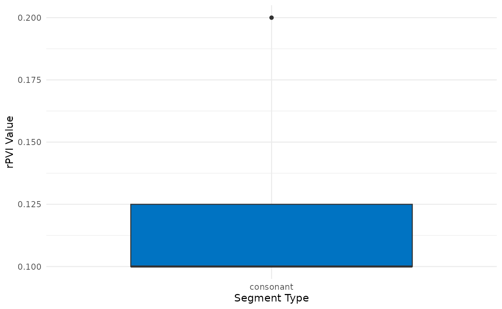
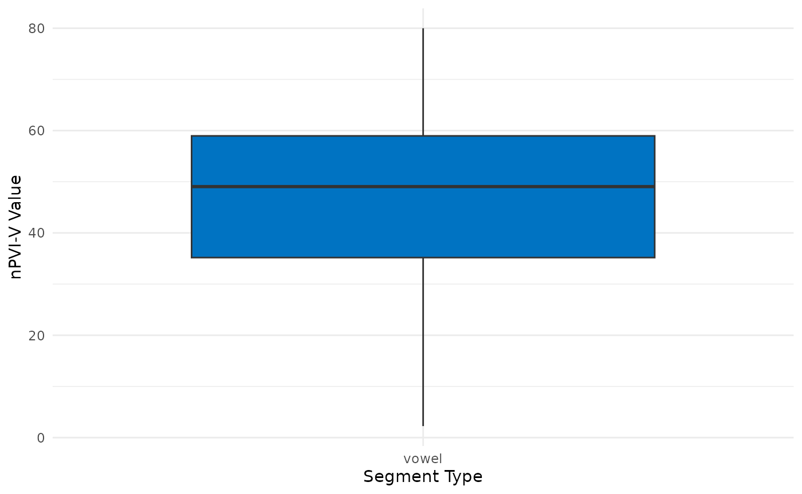

A Guide for the R Package `rhythm.metrics`
Cong Zhang, Newcastle University
2026-09-04
Source:vignettes/rhythm_metrics.Rmd
rhythm_metrics.RmdInstallation
install.packages("devtools")
devtools::install_github("congzhang365/rhythm.metrics")Examples
Create dataframe
df <- data.frame (cv_label = c("consonant", "vowel", "consonant", "vowel",
"consonant", "vowel", "consonant", "vowel",
"consonant", "vowel", "consonant", "vowel",
"consonant", "vowel", "consonant", "vowel"),
utterance_id = c("utt_1", "utt_1", "utt_1", "utt_1",
"utt_2", "utt_2", "utt_2", "utt_2",
"utt_3", "utt_3", "utt_3", "utt_3",
"utt_4", "utt_4", "utt_4", "utt_4"),
cv_duration = c(0.1, 0.8, 0.2, 0.5,
0.3, 0.3, 0.4, 0.7,
0.3, 0.88, 0.5, 0.9,
0.3, 0.57, 0.4, 0.97),
utterance_duration = c(2.4, 2.4, 2.4, 2.4,
2.7, 2.7, 2.7, 2.7,
3.4, 3.4, 3.4, 3.4,
1.8, 1.8, 1.8, 1.8))
df
#> cv_label utterance_id cv_duration utterance_duration
#> 1 consonant utt_1 0.10 2.4
#> 2 vowel utt_1 0.80 2.4
#> 3 consonant utt_1 0.20 2.4
#> 4 vowel utt_1 0.50 2.4
#> 5 consonant utt_2 0.30 2.7
#> 6 vowel utt_2 0.30 2.7
#> 7 consonant utt_2 0.40 2.7
#> 8 vowel utt_2 0.70 2.7
#> 9 consonant utt_3 0.30 3.4
#> 10 vowel utt_3 0.88 3.4
#> 11 consonant utt_3 0.50 3.4
#> 12 vowel utt_3 0.90 3.4
#> 13 consonant utt_4 0.30 1.8
#> 14 vowel utt_4 0.57 1.8
#> 15 consonant utt_4 0.40 1.8
#> 16 vowel utt_4 0.97 1.8delta_cv
Delta C and Delta V are rhythm metrics based on Ramus, F., Nespor, M., & Mehler, J. (1999). Correlates of linguistic rhythm in the speech signal. Cognition, 73(3), 265-292.
Delta C: SD of total C durationDelta V: SD of total V duration
delta_cv(df, cv_label, utterance_id, cv_duration)
#> # A tibble: 2 × 3
#> cv_label mean_delta sd_delta
#> <chr> <dbl> <dbl>
#> 1 consonant 0.0884 0.0354
#> 2 vowel 0.198 0.127
plot_delta_cv(df, cv_label, utterance_id, cv_duration)
varco_cv
Varco C and Varco V are rhythm metrics based on Dellwo, Volker (2006). Rhythm and Speech Rate: A Variation Coefficient for deltaC. In: Karnowski, P; Szigeti, I. Language and language-processing. Frankfurt/Main: Peter Lang, 231-241.
Varco C: Delta C / mean(C duration) * 100Varco V: Delta V / mean(V duration) * 100
varco_cv(df, cv_label, utterance_id, cv_duration)
#> # A tibble: 2 × 2
#> cv_label varco_cv
#> <chr> <dbl>
#> 1 consonant 30.7
#> 2 vowel 31.9
plot_varco_cv(df, cv_label, utterance_id, cv_duration)
percentage_v
%V is a rhythm metrics based on Ramus, F., Nespor, M., & Mehler, J. (1999). Correlates of linguistic rhythm in the speech signal. Cognition, 73(3), 265-292. It calculates the percentage of an utterance occupied by vocalic material.
%V: (total V duration / total utterance duration) * 100
percentage_v(df, v_label = "vowel", utterance_id, cv_duration, utterance_duration)
#> # A tibble: 1 × 3
#> cv_label mean_percent_v sd_percent_v
#> <chr> <dbl> <dbl>
#> 1 vowel 57.3 20.4
plot_percentage_v(df, cv_label, label_name = "vowel",
utterance_id, cv_duration, utterance_duration)
rpvi_c
rPVI C is a rhythm metrics based on Grabe, E., & Low, E. L. (2002). Durational variability in speech and the rhythm class hypothesis. In Laboratory phonology 7 (pp. 515-546). De Gruyter Mouton.
It calculates the sum of the absolute differences between pairs of consecutive consonantal intervals divided by the number of pairs in the speech sample.
rpvi_c(df, cv_label, label_name = "consonant", utterance_id, cv_duration)
#> # A tibble: 1 × 1
#> rpvi
#> <dbl>
#> 1 0.125
plot_rpvi(df, cv_label, label_name = "consonant", utterance_id, cv_duration)
npvi_v
nPVI V is a rhythm metrics based on Grabe, E., & Low, E. L. (2002). Durational variability in speech and the rhythm class hypothesis. In Laboratory phonology 7 (pp. 515-546). De Gruyter Mouton.
It calculates the normalised sum of the absolute differences between pairs of consecutive vocalic intervals divided by the number of pairs in the speech sample.
npvi_v(df, cv_label, label_name = "vowel", utterance_id, cv_duration)
#> # A tibble: 1 × 1
#> npvi
#> <dbl>
#> 1 45.1
plot_npvi(df, cv_label, label_name = "vowel", utterance_id, cv_duration)